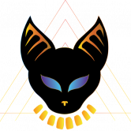

WarLand 大型多人在线角色扮演游戏 | NFT | 600把独特的剑|索拉纳 |质押 |元界俱乐部|道 |赌场 |战争令牌 WarLand 是具有 NFT 集成的下一级 MMORPG 游戏。 专注并努力开发最佳
Warrior Legend 币安智能链最佳 NFT 游戏。不仅仅是一款游戏，Warrior 还有一个强大的社区，帮助玩家投资活动以从游戏中赚钱。 Warrior Legend Story简介 它是吉米博士时空
WAX Arena Battle Game WaxArena 是一款基于网络的革命性 NFT 竞技场对战游戏，在 WAX 区块链上推出，由 Ishiki Arata、Alex Griciuc、Robert Lazar 和 Vaklin Petkov 的才华横溢的头脑创造
Wilderness Play 2 Earn Wilderness 最初是一款 MMORPG [大型多人在线角色扮演游戏]，它提供有趣的游戏体验，同时激励玩家获得赚钱机会。 Wilderness 通过将游戏中创造的价值认真分配给玩家，为其玩家
Winlambo Winlambo 是一种生成 Lambo 的代币，可为用户提供持续的被动收入和赢得 210k BUSD 的机会！ Winlambo 协议具有建立在 rfi 基础之上的创新票务系统。您的代币就是您的门票。每个 Winlambo 代币
xPOKE PlayToEarn，受 Axie Infinity 启发，在传统游戏中实现。 Pokémon Showdown 服务器的服务器内货币（拥有自己的货币的服务器，即使是 xPOKE 无法控制的），可转
Grapenopoly Play2Earn Grapenopoly - 我们为想要在玩和学习时赚钱的人推出了 NFT 游戏环境。 主要特点： 低买高卖 NFT 资产 赚取被动收入出租物业 进出 NFT - 外部市场 使用加电代币提高您的租金 第 1
 Onyx Dapp 什么是 Onyx Dapp ？ Onyx 是第一款在虚幻引擎 4 中建立在币安智能链上的游戏💎 🌐 独特的开放世界游戏 🎮 玩2赚取机制 💰 代币将成为游戏内货币 ⚔ 可交易的 NFT 武器和皮肤
Sacred Tails Sacred Tails (ST) 是一款基于 PVP 的基于区块链的 3D 对战游戏，通过战略规划的商业模式利用游戏和 NFT 领域的机会。 游戏围绕着你可以铸造、繁殖和战斗的 Shinsei 展开。我们世界
Sailors World Sailors World 是一款基于 NFT 的探险游戏，具有动态经济模型。 玩家可以建造船只，开采资源，探索海洋。 建立自己的水手世界舰队，挖掘资源，参加远征和战斗！ Sailors World 是
Samurai Legends Samurai Legends 是一个以封建日本为背景的大战略角色扮演虚拟世界。 在单一的大型多人游戏世界中，玩家进行 PvP 战斗、构建、制定战略并参与政治，以进一步提升他们在
SamuraiLands SamuraiLands 是 RisingSun 的 GameFi 虚拟世界的重要组成部分。 玩家统治数字土地并积累宝贵的资源，以谋取财富并成为幕府将军。 陆地 NFT 具有独特的特性，可以在日本稀缺的丘陵、山
Sanguo Z World Sanguo Z World 是一款 WAX 区块链游戏，玩家可以在其中赚取 YUAN 代币和 NFT。 在战斗中，玩家通过获得足够的声望来升级，解锁并探索三国Z世界的新功能。 游戏有3个
ShiPlay 介绍 ShiPlay 元宇宙 Shiba 的粉丝们！为全世界的 Shiba 爱好者推出首个 3D Shiba 游戏！ 那么什么是Shiplay呢？ 简而言之，Shiplay 是一款 3D 游戏，您可以在其中购
Sidus NFT Heroes SIDUS：NFT Heroes 是由 NFT STARS 和国际现代艺术家集体 NFT256 创建的 6,000 个生成角色的集合。该系列包含 4,000 名原创 NFT 英雄、1,000 名稀有英雄、500 名传奇英雄
Sing To Earn Sing To Earn 是一款 Web3 生活方式应用程序，用于通过社交和金融元素唱歌和赚钱。 Sing To Earn 是建立在大多数人的日常休闲活动之上的。这是第一个为唱歌和赚钱的概念带
Sinners Playground Sinners Playground 是一款赚取地狱经济模式模拟器的游戏——体验成为大坏老板之一的大冒险！您可以尝试自己作为恶魔统治者发展自己的罪人圈子，获得不同品种的罪人怪
Sipherian Surge xxxxxxxxxx 前 10,000 个 Sipherians SIPHER 是两种理想的组合：Surrogate 和 Cipher。这些是西弗利亚世界的冒险家。第一个种族，INU，组成了“西弗利亚浪潮”的第一
Skullapes 我们正在创建一个 WebXR（基于浏览器）多人 NFT 游戏，内容是“A Battle In ONE Desert”，其中 Blue Apes 正在战斗并寻找宝藏。这是一款易于上手的基于网络的
SKYGARD SKYGARD 是一款革命性的动漫灵感 NFT ARPG 游戏，围绕 P2E 和 F2P 机制构建，您可以在其中购买、出售、收集 NFT 物品，通过耕种、质押等方式获得奖励。由于安全性、速度、费
SLAPKING GAME Slap Kings 是一款有趣且非常有趣的街机和娱乐风格游戏的名称，由 Gameguru 工作室准备，并准备在币安智能链 (BSC) 上进行测试。在此游戏发布的同时，Farsroid 将在
Slothtopia Slothtopia 是一个 3D 虚拟世界。推出 1000 个自定义头像，这些头像是游戏中可玩的角色。我们还发布了一个公寓/画廊功能，允许用户在 Metaverse 中拥有自己的空间并对其进行自
Superfast 第一款具有铬和马力的 NFT 收藏家纸牌游戏！ 我们的使命是将传统的汽车四重奏纸牌游戏演变成令人兴奋的基于多边形的 NFT 游戏。 SUPERFAST.CARDS 不仅仅是一个很好的收藏 NFT 集
Survivor Sector Survivor Sector - 是一个 Play-to-Earn WaxBlokchain 项目，但游戏本身是塔防类型的代表。在游戏过程中，玩家将成为营地的指挥官，营地由 5 座主要建筑组成：锯木厂、花园、车间、住宅楼和
Synergy of Serra Serra 的协同作用塑造了一种新的游戏类型，将经典的策略卡牌游戏与 Deckbuilder 卡牌游戏的无限游戏体验可能性相结合。 Play-to-Earn：从 90 张独特的卡片免
Taco 游戏、实用程序和 DeFi。 Taco 是 WAX 区块链上的终极 Web3 项目，结合了用于加密的智能钱包应用程序、基于 NFT 的 P2E 游戏平台和它自己的元节 Taco Universe。
Tadiko Miniken Miniken 是一种生活在名为 Tadiko Land 的元宇宙中的生物。 Tadiko 在你小时候的每一个梦想和想象中。 与被遗忘的朋友一起重新发现您的童年记忆和冒险。 在每一个动作中找到自
TaleCraft Avalanche TaleCraft 上的第一款手工艺游戏是一款 PVP 即赚钱纸牌桌游，由独特的铸币厂和工艺机制驱动，玩家通过游戏化的 NFT 炼金术变得更加强大。元素基础卡每周出售，只有
Tales of Phantom Tales of Phantom 是一款在 Fantom Opera 上开发的 Play to Earn RPG 游戏。 游戏围绕着获得传奇武器和强大的英雄来战略性地对抗夜灵的罪恶野兽。 基于 Fantom 网络的全新基于区块链的游戏体验
Tank Battle Tank Battle - 2021 年最吸引人的回合制 NFT 游戏，让你摆脱包袱！ Tank Battle NFT 游戏不仅仅是 Play for Fun 或 Play to Earn 的游戏，它为团队玩家创造了竞争，并要求他们通过与其他玩家的互